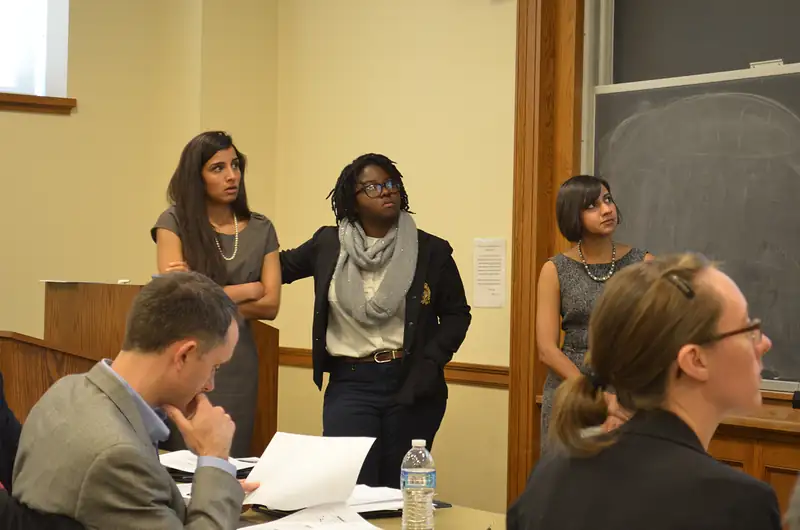
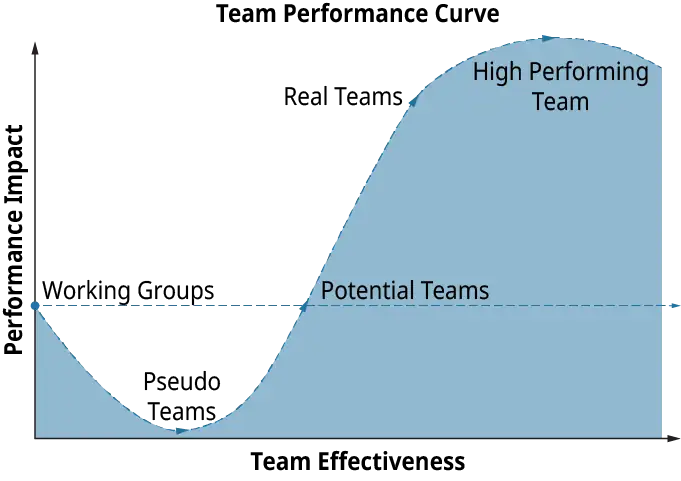
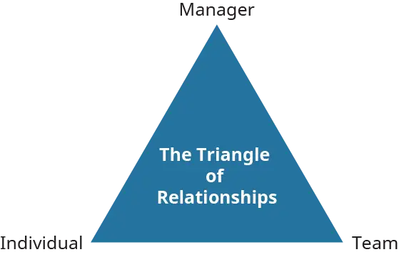
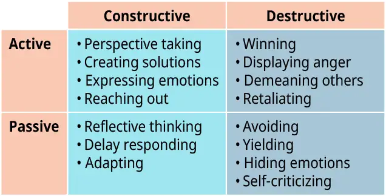

Chapter 15: Managing Teams¶
Introduction¶
Learning Outcomes
After reading this chapter, you should be able to answer these questions:
- What is the benefit of working in teams, and what makes teams effective?
- How do teams develop over time?
- What are some key considerations in managing teams?
- What are the benefits of conflict for a team?
- How does team diversity enhance decision-making and problem-solving?
- What are some challenges and best practices for managing and working with multicultural teams?
Exploring Managerial Careers: Eva Hartmann, Trellis LLC
Eva Hartmann has nearly 20 years of experience as a strategic, results-driven, innovative leader with significant expertise in human resources strategy, talent and leadership development, and organizational effectiveness. She has worked in a variety of industries, from manufacturing to Fortune 500 consulting. Eva is a transformational change agent who has developed and led strategic human capital programs and talent initiatives in multiple challenging environments globally. Eva is passionate about enhancing both individual and organizational performance.
Eva began her career in one of the large “Big 6” management consulting firms at the time, and she happily returned several years ago to consulting. She is the founder and president of Trellis LLC, a human capital consulting and staffing firm in Richmond, Virginia.
Prior to Trellis, Eva was the global human resources leader for a large global manufacturer of plastic film products and was responsible for the HR strategy and operations of a $600 million global division. In this role, Eva led a global team of HR managers in North and South America, Europe, and Asia to support global HR initiatives to drive business results and build human capital and performance across the division.
Eva has also held a variety of leadership and managerial roles in both human resources and quality functions at several nationally and globally recognized companies, including Wachovia Securities, Genworth Financial, Sun Microsystems, and Andersen Consulting (now Accenture).
Eva holds an MBA from the College of William and Mary in Williamsburg, Virginia, and a BA in anthropology from the University of Virginia in Charlottesville, Virginia. She is also an adjunct faculty member with the University of Richmond Robins School of Business. Eva currently serves on the board of the Society of Human Resource Management (SHRM) of Richmond, Virginia.
Much of the work that is performed today in organizations requires a focus on teamwork. The ability to work successfully as a team member, as well as the ability to lead teams, is an ultimate advantage within the workforce. Teams themselves must be managed, in addition to managing just the individuals, to be successful. We’ve all heard the quote originally coined by Aristotle that states that “the whole is greater than the sum of its parts.” This captures the nature of the team perfectly—there is such a synergy that comes from a team that the individuals alone are not able to create. This chapter details the importance of and benefits that you may derive from working as a team, as well as some of the ways we can make our teams more successful.
15.1 Teamwork in the Workplace¶
- What is a team, and what makes a team effective?
Teamwork has never been more important in organizations than it is today. Whether you work in a manufacturing environment and utilize self-directed work teams, or if you work in the “knowledge economy” and derive benefits from collaboration within a team structure, you are harnessing the power of a team.
A team, according to Katzenbach and Smith in their Harvard Business Review (HBR) article “The Discipline of Teams,” is defined as “people organized to function cooperatively as a group”. The five elements that make teams function are:
- Common commitment and purpose
- Specific performance goals
- Complementary skills
- Commitment to how the work gets done
- Mutual accountability
A team has a specific purpose that it delivers on, has shared leadership roles, and has both individual and mutual accountabilities. Teams discuss, make decisions, and perform real work together, and they measure their performance by assessing their collective work products. This is very different from the classic working group in an organization (usually organized by functional area) in which there is a focused leader, individual accountabilities and work products, and a group purpose that is the same as the broader organizational mission. Think of the finance organization or a particular business unit in your company—these are, in effect, larger working groups that take on a piece of the broader organizational mission. They are organized under a leader, and their effectiveness is measured by its influence on others within the business (e.g., financial performance of the business.)
So, what makes a team truly effective? According to Katzenbach and Smith’s “Discipline of Teams,” there are several practices that the authors have observed in successful teams. These practices include:
Establish urgency, demanding performance standards, and direction. Teams work best when they have a compelling reason for being, and it is thus more likely that the teams will be successful and live up to performance expectations. We’ve all seen the teams that are brought together to address an “important initiative” for the company, but without clear direction and a truly compelling reason to exist, the team will lose momentum and wither.
Select members for their skill and skill potential, not for their personality. This is not always as easy as it sounds for several reasons. First, most people would prefer to have those with good personalities and positive attitudes on their team in order to promote a pleasant work environment. This is fine, but make sure that those individuals have the skill sets needed (or the potential to acquire/learn) for their piece of the project. The second caveat here is that you don’t always know what skills you need on a project until you really dig in and see what’s going on. Spend some time up front thinking about the purpose of the project and the anticipated deliverables you will be producing, and think through the specific types of skills you’ll need on the team.
Pay particular attention to first meetings and actions. This is one way of saying that first impressions mean a lot—and it is just as important for teams as for individuals. Teams will interact with everyone from functional subject-matter experts all the way to senior leadership, and the team must look competent and be perceived as competent. Keeping an eye on your team’s level of emotional intelligence is very important and will enhance your team’s reputation and ability to navigate stakeholders within the organization.
Set some clear rules of behavior. I have been through many meetings and team situations in which we have rushed through “ground rules” because it felt like they were obvious—and everyone always came up with the same list. It is so critical that the team takes the time up front to capture their own rules of the road in order to keep the team in check. Rules that address areas such as attendance, discussion, confidentiality, project approach, and conflict are key to keeping team members aligned and engaged appropriately.
Set and seize upon a few immediate performance-oriented tasks and goals. What does this mean? Have some quick wins that make the team feel that they’re really accomplishing something and working together well. This is very important to the team’s confidence, as well as just getting into the practices of working as a team. Success in the larger tasks will come soon enough, as the larger tasks are really just a group of smaller tasks that fit together to produce a larger deliverable.
Challenge the group regularly with fresh facts and information. That is, continue to research and gather information to confirm or challenge what you know about your project. Don’t assume that all the facts are static and that you received them at the beginning of the project. Often, you don’t know what you don’t know until you dig in. I think that the pace of change is so great in the world today that new information is always presenting itself and must be considered in the overall context of the project.
Spend lots of time together. Here’s an obvious one that is often overlooked. People are so busy that they forget that an important part of the team process is to spend time together, think together, and bond. Time in person, time on the phone, time in meetings—all of it counts and helps to build camaraderie and trust.
Exploit the power of positive feedback, recognition, and reward. Positive reinforcement is a motivator that will help the members of the team feel more comfortable contributing. It will also reinforce the behaviors and expectations that you’re driving within the team. Although there are many extrinsic rewards that can serve as motivators, a successful team begins to feel that its own success and performance is the most rewarding.
Collaboration is another key concept and method by which teams can work together very successfully. Bringing together a team of experts from across the business would seem to be a best practice in any situation. However, Gratton and Erickson, in their article Eight Ways to Build Collaborative Teams, found that collaboration seems to decrease sharply when a team is working on complex project initiatives. In their study, they examined 55 larger teams and identified those with strong collaboration skills, despite the level of complexity. There were eight success factors for having strong collaboration skills:
- “Signature” relationship practices
- Role models of collaboration among executives
- Establishment of “gift” culture, in which managers mentor employees
- Training in relationship skills
- A sense of community
- Ambidextrous leaders—good at task and people leadership
- Good use of heritage relationships
- Role clarity and task ambiguity
As teams grow in size and complexity, the standard practices that worked well with small teams don’t work anymore. Organizations need to think about how to make collaboration work, and they should leverage the above best practices to build relationships and trust.
Concept Check
What is the definition of a team?
Name some practices that can make a team more successful.
15.2 Team Development Over Time¶
- How do teams develop over time?
If you have been a part of a team—as most of us have—then you intuitively have felt that there are different “stages” of team development. Teams and team members often start from a position of friendliness and excitement about a project or endeavor, but the mood can sour and the team dynamics can go south very quickly once the real work begins. In 1965, educational psychologist Bruce Tuckman at Ohio State University developed a four-stage model to explain the complexities that he had witnessed in team development. The original model was called Tuckman’s Stages of Group Development, and he added the fifth stage of “Adjourning” in 1977 to explain the disbanding of a team at the end of a project. The four stages of the Tuckman model are:
- Forming
- Storming
- Norming
- Performing
The Forming stage begins with the introduction of team members. This is known as the “polite stage” in which the team is mainly focused on similarities and the group looks to the leader for structure and direction. The team members at this point are enthusiastic, and issues are still being discussed on a global, ambiguous level. This is when the informal pecking order begins to develop, but the team is still friendly.
The Storming stage begins as team members begin vying for leadership and testing the group processes. This is known as the “win-lose” stage, as members clash for control of the group and people begin to choose sides. The attitude about the team and the project begins to shift to negative, and there is frustration around goals, tasks, and progress.

After what can be a very long and painful Storming process for the team, slowly the Norming stage may start to take root. During Norming, the team is starting to work well together, and buy-in to group goals occurs. The team is establishing and maintaining ground rules and boundaries, and there is willingness to share responsibility and control. At this point in the team formation, members begin to value and respect each other and their contributions.
Finally, as the team builds momentum and starts to get results, it is entering the Performing stage. The team is completely self-directed and requires little management direction. The team has confidence, pride, and enthusiasm, and there is a congruence of vision, team, and self. As the team continues to perform, it may even succeed in becoming a high-performing team. High-performing teams have optimized both task and people relationships—they are maximizing performance and team effectiveness. Katzenberg and Smith, in their study of teams, have created a “team performance curve” that graphs the journey of a team from a working group to a high-performing team. The team performance curve is illustrated in Figure 15.5.

The process of becoming a high-performance team is not a linear process. Similarly, the four stages of team development in the Tuckman model are not linear, and there are also factors that may cause the team to regress to an earlier stage of development. When a team member is added to the group, this may change the dynamic enough and be disruptive enough to cause a backwards slide to an earlier stage. Similarly, if a new project task is introduced that causes confusion or anxiety for the group, then this may also cause a backwards slide to an earlier stage of development. Think of your own experiences with project teams and the backslide that the group may have taken when another team member was introduced. You may have personally found the same to be true when a leader or project sponsor changes the scope or adds a new project task. The team has to re-group and will likely re-Storm and re-Form before getting back to Performing as a team.
Catching the Entrepreneurial Spirit: Starting the Startup Team
Nothing is more exciting than a startup business. The enthusiasm is high, and people are excited about the new venture and the prospects that await. Depending on the situation, there may be funding that the startup has received from investors, or the startup could be growing and powering itself organically. Either way, the startup faces many different questions in the beginning, which will have a tremendous impact on its growth potential and performance down the road. One of the most critical questions that faces a startup —or any business for that matter—is the question of who should be on the team. Human capital is the greatest asset that any company can have, and it is an especially critical decision in a startup environment when you have limited resources and those resources will be responsible for building the company from ground up.
In Noam Wasserman’s January 2012 HBSP article “Assembling the Startup Team,” Wasserman asserts:
“Nothing can bedevil a high-potential startup more than its people problems. In research on startup performance, venture capitalists attributed 65% of portfolio company failures to problems within the startup’s management team. Another study asked investors to identify problems that might occur at their portfolio companies; 61% of the problems involved team issues. These problems typically result from choices that founders make as they add team members…”
These statistics are based on people problems in startups, and it isn’t quite clear what percent of larger company failures could be directly or indirectly attributed to people and team issues. I would imagine that the percentage is also significant. The impact of people problems and team issues in a startup organization that is just getting its footing and trying to make the right connections and decisions can be very significant. If you know anyone who has a company in startup mode, you may have noticed that some of the early team members who are selected to join the team are trusted family members, friends, or former colleagues. Once a startup company grows to a certain level, then it may acquire an experienced CEO to take the helm. In any case, the startup is faced early on with important questions on how to build the team in a way that will maximize the chance of success.
In “Assembling the Startup Team,” the author refers to the three Rs: relationships, roles, and rewards as being key elements that must be managed effectively in order to avoid problems in the long term. Relationships refers to the actual team members that are chosen, and there are several caveats to keep in mind. Hiring relatives or close friends because they are trusted may seem like the right idea in the beginning, but the long-term hazards (per current research) outweigh the benefits. Family and friends may think too similarly, and the team misses the benefit of other perspectives and connections. Roles are important because you have to think about the division of labor and skills, as well as who is in the right roles for decision-making. The startup team needs to think through the implications of assigning people to specific roles, as that may dictate their decision power and status. Finally, defining the rewards can be difficult for the startup team because it essentially means that they are splitting the pie—i.e., both short-term and long-term compensation. For startup founders, this can be a very difficult decision when they have to weigh the balance of giving something away versus gaining human capital that may ultimately help the business to succeed. Thinking through the tradeoffs and keeping alignment between the “three Rs” is important because it challenges the startup team to think of the long-term consequences of some of their early decisions. It is easy to bring family and friends into the startup equation due to trust factors, but a careful analysis of the “three Rs” will help a startup leadership team make decisions that will pay off in the long term.
Discussion Questions
- Why might it be a bad decision to hire someone for a key startup role based only on the fact that the person is close family or a friend? What are the potential tradeoffs to the business?
- What does it mean for the “three Rs” to be in alignment? What is the potential risk of these not being in alignment? What could go wrong?
Concept Check
What are the four stages of team development?
What can cause a team to regress in its development?
15.3 Things to Consider When Managing Teams¶
- What are some key considerations in managing teams?
For those of us who have had the pleasure of managing or leading a team, we know that it can feel like a dubious distinction. Leading a team is fulfilling—especially if the task or organizational mandate at hand is so critical to the organization that people are happy to be a part of the team that drives things forward. It can also be an exercise in frustration, as the charge is to lead a group composed of various individuals, which at various times will act both like a group and like a bunch of individuals. Managing teams is no small feat, and the most experience managers truly understand that success ultimately depends on their ability to build a strong and well-functioning team. In J.J. Gabarro’s The Dynamics of Taking Charge (HBS Press, 1987, pp. 85–87), he quotes a manager who had successfully worked to turn around a number of organizations:
“People have to want to work together; they have to see how to do it. There has to be an environment for it and that takes time. It’s my highest priority right now but I don’t write it down anywhere because it’s not like other priorities. If I told corporate that building a team was my prime goal they’d tell me, so what? They’d expect that as part of making things better.”
I love this quotation because it’s so indicative of the state of most organizations today. The focus is on corporate goals and priorities—very task-driven and outcome-driven—but it is the people dynamics and how people work together in the company and in TEAMS that can make a real difference to the goals and outcome.
Managerial Leadership: Who Am I Managing?
Making the jump from individual contributor to manager is never easy, and it doesn’t take long for a new manager to realize that what got him there is much different than what is needed to be successful in the future. Individual contributors that have been recently promoted would probably say that they have strong technical skills in their area, and that they were very good at doing what they were doing. In a more savvy organization that recognizes leadership competencies, individual contributors would probably say that they have strong technical skills AND that they showed some behaviors and potential to lead others. When new managers enter their new roles, they expect that they will be managing people—that is, the people on their teams. Few new managers fully realize that the challenge ahead is not just in managing their people, but in managing all the other stakeholders and constituencies that want to and need to weigh in.
One of the key challenges that faces new managers is figuring out to balance all of the multiple demands from both the team and the stakeholders and constituencies external to the team. Linda A. Hill, the Wallace Brett Donham Professor of Business Administration at Harvard Business School, states that “among all the challenges facing new managers, the need to reconcile different constituencies’ expectations and interests is probably the most difficult.” She asserts that the demands that the new manager’s direct reports, his peers, his boss, and the company’s customers place on the new manager will cause conflict at times. Having teams of their own, new managers may think that managing their direct reports is the most important role to play, even at the exclusion of managing other stakeholders. This is incorrect. A new manager needs to “manage his other consistencies just as carefully.” (“Helping New Managers Succeed,” Lauren Keller Johnson, HBR 2008).
Whenever I started a new role, I always created a quick stakeholder checklist for myself. This document is essentially a list of all the stakeholders (beyond the team I am managing) with whom I need to build a relationship in order to be successful. I listed the names of my boss, my boss’s boss, my peers, and any other key influencers or internal customers from the business. This is a quick checklist of the people that I need to immediately have a “meet and greet” with and then possibly even set up a regular meeting with at a certain cadence. I have learned over the years that each of these stakeholders will have some input and impact on my success, and the quicker and more effectively I engage them in the work my team is performing, the better the chance of my team’s success. Some of the questions I will ask myself when figuring out my stakeholder list include:
- Whose support will I need?
- Who needs my support? What do they need from me or my team?
- Who can keep me and my team from being successful?
- What is my ongoing influencing strategy?
Some new managers will feel that these strategies for building stakeholder support are too “political” and they don’t feel right. Trust me when I tell you that this is a necessary part of the new manager role, because now the role and the work call for greater interdependence and relation building in order to be successful. It is no longer just about individual technical skills, but more about building and managing relationships with people who will support you and your team to get your work done. So, if you are a new manager asking “Who am I managing?” … the answer is EVERYONE.
Discussion Questions
- Do you agree with the statement that “what got you there isn’t what will make you successful in the future”? Why or why not?
- Who would be on your stakeholder checklist? Which stakeholders are you already engaging and building relationships with?
In Linda A. Hill’s Harvard Business Review article “Managing Your Team” (HBR 1995), she discusses that managing a team means managing paradox. Paradox exists in the fact that teams have both individual and collective identities and goals. Each individual has goals and ideas as to what he wants to accomplish—on the project, in one’s career, and in life. The team itself, of course, has goals and success metrics that it needs to meet in order to be successful. Sometimes these can be in conflict with each other. Competition may arise among team members, and a win-loss attitude may take place over a collaborative and problem-solving team dynamic. The team manager may need to step in to help integrate all of the individual differences to enable them to productively pursue the team goal. Therein lies the primary paradox—balancing individual differences and goals AND the collective identity and goals. Other paradoxes include:
- Fostering support AND confrontation among team members
- Focusing on performance AND learning and development
- Balancing managerial authority AND team member discretion and autonomy
- Balancing the Triangle of Relationships—manager, team, and individual

Managing a team also means managing its boundaries. Managing the team’s boundaries—or space between the team and its external forces, stakeholders, and pressures—is a delicate balance of strategy, stakeholder management, and organizational behavior. The team manager must serve, in part, as a buffer to these external factors so that they don’t derail or distract the team from its goals. However, the manager must also understand enough about the external environment and have enough emotional intelligence to understand which forces, players, or situations must be synthesized within the team for its own benefit. Think about any medium or large-scale change initiative that you have been a part of in your career. Ideally, there is generally a vision for change and a level of sponsorship at the senior levels of the organization that is supposed to pave the way for that change to take root. The project team is officially “blessed” to kick off the team, create a charter, and identify the needed actions to drive the initiative to successful completion.
The dynamic that ensues after the kickoff is really what will determine the success of the team. There are numerous stakeholders in any organization, and many will be pro–change initiative, but others may be against the initiative—either due to lack of understanding or concerns about losing power, territory, etc. The external environment and business strategy may not be particularly well suited for a change initiative to take place, and so there may be the feeling of forces opposing the project team efforts. A strong team manager needs manage these “boundaries” with the organization to help the team navigate through and with the organizational complexities, goals, nuances, and egos that are a part of any organization. In Linda A. Hill’s Harvard Business Review article “Exercising Influence,” she states that “managers also need to manage relationships with those who are outside their team but inside their organizations. To do so, they must understand the power dynamics of the larger organization and invest time and energy in building and maintaining relationship with those on who the team is dependent.” It is also, in her view, “the manager’s job, at a minimum, to educate other about organizational structures, systems, or politics that interfere with the team’s performance.” With all of the potential external influences on a team, managing a team’s boundaries can truly mean the difference between success and failure.
The final element of managing a team is to manage the team itself—both the people elements and the process elements, or task at hand. The process-focused elements include managing the work plan to reach the overall goal, as well as the incremental meetings and milestones that are a part of the team’s journey to reach the longer-term goal. Keeping the team focused on its objectives—beginning with setting agendas all the way to managing project tasks and celebrating milestones—assures that the team will stay on track. Projects and initiatives vary in size, scope, and complexity, and so the project management tools shouldn’t be prescribed in a general sense. The important takeaway here is to choose an approach and a tool that works for the culture of the team and the organization, and that helps the team understand where they are, where they need to go, and what resources are a part of that process.
In managing the team members and interpersonal dynamics, there is the important element of selecting the right team members, shaping the team’s norms and culture (how are decisions made, what are our rules, how do we manage conflict, etc.), and coaching the team. Defining the right skill sets, functions, perspectives, and expertise of the members will ensure a solid foundation. Helping the team to identify and formalize the ground rules for team engagement will help manage in the face of adversity or team conflict in the future. Finally, playing a role as a supportive coach will help both the individual team members and the group entity think through issues and make progress towards goals. A coach doesn’t solve the individual/team problem, but helps the team think through a solution and move forward. Teams may need guidance on how to work things out within the team, and the manager must provide feedback and hold team members accountable for their behavior and contribution. Continuous improvement is the name of the game. A team may not start out as high performing, but they can certainly achieve that goal if everyone is focused on incremental improvements to communication, collaboration, and performance.
Concept Check
Discuss the paradox(es) of a team.
How can a leader manage team boundaries?
15.4 Opportunities and Challenges to Team Building¶
- What are the benefits of conflict for a team?
There are many sources of conflict for a team, whether it is due to a communication breakdown, competing views or goals, power struggles, or conflicts between different personalities. The perception is that conflict is generally bad for a team and that it will inevitably bring the team down and cause them to spiral out of control and off track. Conflict does have some potential costs. If handled poorly, it can create distrust within a group, it can be disruptive to group progress and morale, and it could be detrimental to building lasting relationships. It is generally seen as a negative, even though constructive conflicts and constructive responses to conflicts can be an important developmental milestone for a team. Some potential benefits of conflict are that it encourages a greater diversity of ideas and perspectives and helps people to better understand opposing points of view. It can also enhance a team’s problem-solving capability and can highlight critical points of discussion and contention that need to be given more thought.
Another key benefit or outcome of conflict is that a team that trusts each other—its members and members’ intentions—will arise from conflict being a stronger and higher-performing team. Patrick Lencioni, in his bestselling book The Five Dysfunctions of a Team (2002, p. 188), writes:
“The first dysfunction is an absence of trust among team members. Essentially, this stems from their unwillingness to be vulnerable within the group. Team members who are not genuinely open with one another about their mistakes and weaknesses make it impossible to build a foundation for trust. This failure to build trust is damaging because it sets the tone for the second dysfunction: fear of conflict. Teams that lack trust are incapable of engaging in unfiltered and passionate debate of ideas. Instead, they resort to veiled discussions and guarded comments.”
Lencioni also asserts that if a team doesn’t work through its conflict and air its opinions through debate, team members will never really be able to buy in and commit to decisions. (This lack of commitment is Lencioni’s third dysfunction.) Teams often have a fear of conflict so as not to hurt any team members’ feelings. The downside of this avoidance is that conflicts still exist under the surface and may resurface in more insidious and back-channel ways that can derail a team. How can a team overcome its fear of conflict and move the team forward? Lencioni names a few strategies that teams can use to make conflict more common and productive. Mining is a technique that can be used in teams that tend to avoid conflict. This technique requires that one team member “assume the role of a ‘miner of conflict’—someone who extracts buried disagreements within the team and sheds the light of day on them. They must have the courage and confidence to call out sensitive issues and force team members to work through them.” Real-time permission is another technique to “recognize when the people engaged in conflict are becoming uncomfortable with the level of discord, and then interrupt to remind them that what they are doing is necessary.” This technique can help the group to focus on the points of conflict by coaching the team not to sweep things under the rug.
The team leader plays a very important role in the team’s ability to address and navigate successfully through conflicts. Sometime a leader will have the attitude that conflict is a derailer and will try to stymie it at any cost. This ultimately leads to a team culture in which conflict is avoided and the underlying feelings are allowed to accumulate below the surface of the discussion. The leader should, by contrast, model the appropriate behavior by constructively addressing conflict and bringing issues to the surface to be addressed and resolved by the team. This is key to building a successful and effective team.
There are a variety of individual responses to conflict that you may see as a team member. Some people take the constructive and thoughtful path when conflicts arise, while others may jump immediately to destructive behaviors. In Managing Conflict Dynamics: A Practical Approach, Capobianco, Davis, and Kraus (2005) recognized that there are both constructive and destructive responses to conflict, as well as active and passive responses that we need to recognize. In the event of team conflict, the goal is to have a constructive response in order to encourage dialogue, learning, and resolution. Responses such as perspective taking, creating solutions, expressing emotions, and reaching out are considered active and constructive responses to conflict. Reflective thinking, delay responding, and adapting are considered passive and constructive responses to conflict. See Figure 15.7 for a visual of the constructive responses, as well as the destructive responses, to conflict.

In summary, conflict is never easy for an individual or a team to navigate through, but it can and should be done. Illuminating the team about areas of conflict and differing perspectives can have a very positive impact on the growth and future performance of the team, and it should be managed constructively.
Concept Check
What are some techniques to make conflict more productive?
What are some destructive responses to conflict?
15.5 Team Diversity¶
- How does team diversity enhance decision-making and problem-solving?
Decision-making and problem-solving can be much more dynamic and successful when performed in a diverse team environment. The multiple diverse perspectives can enhance both the understanding of the problem and the quality of the solution. As I reflect on some of the leadership development work that I have done in my career, I can say from experience that the team activities and projects that intentionally brought diverse individuals together created the best environments for problem-solving. Diverse leaders from a variety of functions, from across the globe, at varying stages of their careers and experiences with and outside of the company had the most robust discussions and perspectives. Diversity is a word that is very commonly used today, but the importance of diversity and building diverse teams can sometimes get lost in the normal processes of doing business. Let’s discuss why we need to keep these principles front of mind.
In the Harvard Business Review article “Why Diverse Teams are Smarter” (Nov. 2016), David Rock and Heidi Grant support the idea that increasing workplace diversity is a good business decision. A 2015 McKinsey report on 366 public companies found that those in the top quartile for ethnic and racial diversity in management were 35% more likely to have financial returns above their industry mean, and those in the top quartile for gender diversity were 15% more likely to have returns above the industry mean. Similarly, in a global analysis conducted by Credit Suisse, organizations with at least one female board member yielded a higher return on equity and higher net income growth than those that did not have any women on the board.
Additional research on diversity has shown that diverse teams are better at decision-making and problem-solving because they tend to focus more on facts, per the Rock and Grant article. A study published in the Journal of Personality and Social Psychology showed that people from diverse backgrounds “might actually alter the behavior of a group’s social majority in ways that lead to improved and more accurate group thinking.” It turned out that in the study, the diverse panels raised more facts related to the case than homogenous panels and made fewer factual errors while discussing available evidence. Another study noted in the article showed that diverse teams are “more likely to constantly reexamine facts and remain objective. They may also encourage greater scrutiny of each member’s actions, keeping their joint cognitive resources sharp and vigilant. By breaking up workforce homogeneity, you can allow your employees to become more aware of their own potential biases—entrenched ways of thinking that can otherwise blind them to key information and even lead them to make errors in decision-making processes.” In other words, when people are among homogeneous and like-minded (nondiverse) teammates, the team is susceptible to groupthink and may be reticent to think about opposing viewpoints since all team members are in alignment. In a more diverse team with a variety of backgrounds and experiences, the opposing viewpoints are more likely to come out and the team members feel obligated to research and address the questions that have been raised. Again, this enables a richer discussion and a more in-depth fact-finding and exploration of opposing ideas and viewpoints in order to solve problems.
Diversity in teams also leads to greater innovation. A Boston Consulting Group article entitled “The Mix that Matters: Innovation through Diversity” explains a study in which BCG and the Technical University of Munich conducted an empirical analysis to understand the relationship between diversity in managers (all management levels) and innovation. The key findings of this study show that:
- The positive relationship between management diversity and innovation is statistically significant—and thus companies with higher levels of diversity derive more revenue from new products and services.
- The innovation boost isn’t limited to a single type of diversity. The presence of managers who are either female or are from other countries, industries, or companies can cause an increase in innovation.
- Management diversity seems to have a particularly positive effect on innovation at complex companies—those that have multiple product lines or that operate in multiple industry segments.
- To reach its potential, gender diversity needs to go beyond tokenism. In the study, innovation performance only increased significantly when the workforce included more than 20% women in management positions. Having a high percentage of female employees doesn’t increase innovation if only a small number of women are managers.
- At companies with diverse management teams, openness to contributions from lower-level workers and an environment in which employees feel free to speak their minds are crucial for fostering innovation.
When you consider the impact that diverse teams have on decision-making and problem-solving—through the discussion and incorporation of new perspectives, ideas, and data—it is no wonder that the BCG study shows greater innovation. Team leaders need to reflect upon these findings during the early stages of team selection so that they can reap the benefits of having diverse voices and backgrounds.
Concept Check
Why do diverse teams focus more on data than homogeneous teams?
How are diversity and innovation related?
15.6 Multicultural Teams¶
- What are some challenges and best practices for managing and working with multicultural teams?
As globalization has increased over the last decades, workplaces have felt the impact of working within multicultural teams. The earlier section on team diversity outlined some of the highlights and benefits of working on diverse teams, and a multicultural group certainly qualifies as diverse. However, there are some key practices that are recommended to those who are leading multicultural teams so that they can parlay the diversity into an advantage and not be derailed by it.
People may assume that communication is the key factor that can derail multicultural teams, as participants may have different languages and communication styles. In the Harvard Business Review article “Managing Multicultural Teams,” the authors point out four key cultural differences that can cause destructive conflicts in a team. The first difference is direct versus indirect communication. Some cultures are very direct and explicit in their communication, while others are more indirect and ask questions rather than pointing our problems. This difference can cause conflict because, at the extreme, the direct style may be considered offensive by some, while the indirect style may be perceived as unproductive and passive-aggressive in team interactions.
The second difference that multicultural teams may face is trouble with accents and fluency. When team members don’t speak the same language, there may be one language that dominates the group interaction—and those who don’t speak it may feel left out. The speakers of the primary language may feel that those members don’t contribute as much or are less competent. The next challenge is when there are differing attitudes toward hierarchy. Some cultures are very respectful of the hierarchy and will treat team members based on that hierarchy. Other cultures are more egalitarian and don’t observe hierarchical differences to the same degree. This may lead to clashes if some people feel that they are being disrespected and not treated according to their status. The final difference that may challenge multicultural teams is conflicting decision-making norms. Different cultures make decisions differently, and some will apply a great deal of analysis and preparation beforehand. Those cultures that make decisions more quickly (and need just enough information to make a decision) may be frustrated with the slow response and relatively longer thought process.
These cultural differences are good examples of how everyday team activities (decision-making, communication, interaction among team members) may become points of contention for a multicultural team if there isn’t adequate understanding of everyone’s culture. The authors propose that there are several potential interventions to try if these conflicts arise. One simple intervention is adaptation, which is working with or around differences. This is best used when team members are willing to acknowledge the cultural differences and learn how to work with them. The next intervention technique is structural intervention, or reorganizing to reduce friction on the team. This technique is best used if there are unproductive subgroups or cliques within the team that need to be moved around. Managerial intervention is the technique of making decisions by management and without team involvement. This technique is one that should be used sparingly, as it essentially shows that the team needs guidance and can’t move forward without management getting involved. Finally, exit is an intervention of last resort, and is the voluntary or involuntary removal of a team member. If the differences and challenges have proven to be so great that an individual on the team can no longer work with the team productively, then it may be necessary to remove the team member in question.
There are some people who seem to be innately aware of and able to work with cultural differences on teams and in their organizations. These individuals might be said to have cultural intelligence. Cultural intelligence is a competency and a skill that enables individuals to function effectively in cross-cultural environments. It develops as people become more aware of the influence of culture and more capable of adapting their behavior to the norms of other cultures. In the IESE Insight article entitled “Cultural Competence: Why It Matters and How You Can Acquire It” (Lee and Liao, 2015), the authors assert that “multicultural leaders may relate better to team members from different cultures and resolve conflicts more easily. Their multiple talents can also be put to good use in international negotiations.” Multicultural leaders don’t have a lot of “baggage” from any one culture, and so are sometimes perceived as being culturally neutral. They are very good at handling diversity, which gives them a great advantage in their relationships with teammates.
In order to help employees become better team members in a world that is increasingly multicultural, there are a few best practices that the authors recommend for honing cross-cultural skills. The first is to “broaden your mind”—expand your own cultural channels (travel, movies, books) and surround yourself with people from other cultures. This helps to raise your own awareness of the cultural differences and norms that you may encounter. Another best practice is to “develop your cross-cultural skills through practice” and experiential learning. You may have the opportunity to work or travel abroad—but if you don’t, then getting to know some of your company’s cross-cultural colleagues or foreign visitors will help you to practice your skills. Serving on a cross-cultural project team and taking the time to get to know and bond with your global colleagues is an excellent way to develop skills. In my own “past life,” I led a global human resources organization, and my team included employees from China, India, Brazil, Hungary, the Netherlands, and the United States. We would have annual meetings as a global HR team, and it was so rewarding to share and learn about each other’s cultures. We would initiate the week with a gift exchange in a “show and tell” format from our various countries, so that everyone would learn a little bit more about the cultures in which our fellow colleagues were working. This type of interaction within a global team is a great way to facilitate cross-cultural understanding and communication, and to sharpen everyone’s cultural intelligence.
Managing Change: Understanding Our Global Colleagues
If you are a part of a global team, there are so many challenges that confront you even before you talk about people dynamics and cultural differences. You first may have to juggle time zone differences to find an adequate meeting time that suits all team members. (I used to have a team call with my Chinese colleagues at 8 p.m. my time, so that I could catch them at 8 a.m. in China the next day!) Language challenges can also pose a problem. In many countries, people are beginning to learn English as one of the main business languages. However, as I have experienced, people don’t always speak their language the same way that you might learn their language in a book. There are colloquialisms, terms, and abbreviations of words that you can’t learn in a classroom—you need to experience how people speak in their native countries.
You also need to be open-minded and look at situations from the perspective of your colleagues’ cultures, just as you hope they will be open-minded about yours. This is referred to as cultural intelligence. Whenever I would travel globally to visit my colleagues in other countries, I would see foods, traditions, situations, and behaviors that were very “foreign” to me. Although my first response to experiencing these might be to think “wow, that’s strange,” I would try to think about what some of my global colleagues find “foreign” when they come to visit me in the United States. For example, my travel to China would put me in contact with chicken feet, a very popular food in China and one that I dislike immensely. Whenever I was offered chicken feet, I would turn them down in the most polite way possible and would take another food that was offered instead. I started to wonder about what my Chinese colleagues thought about the food when they’d come to visit me in the United States. Every year, I would host a global HR meeting in the United States, and a bit part of that meeting was the camaraderie and the sharing of various meals together. When I asked my Chinese colleagues what foods they thought were unpleasant, they mentioned cheese and meat. I was surprised about the meat, and when I asked, they said that it wasn’t the meat itself necessarily, but it was the giant portions of meat that Americans will eat that, to them, is pretty unappetizing. Again, it is so important to check yourself and your own culture every so often, and to think about those elements that we take for granted (e.g., gigantic meat portions) and try to look at them from the eyes of another culture. It really makes us smarter and better partners to our global colleagues around the world.
In the HBR article “Getting Cross-Cultural Teamwork Right,” the author states that three key factors—mutual learning, mutual understanding, and mutual teaching—build trust with cross-cultural colleagues as you try to bridge cultural gaps. With mutual learning, global colleagues learn from each other and absorb the new culture and behaviors through listening and observation. In mutual understanding, you try to understand the logic and cultural behaviors of the new culture to understand why people are doing what they do. This, of course, requires suspending judgment and trying to understand and embrace the differences. Finally, mutual teaching involves instructing and facilitating. This means trying to bridge the gap between the two cultures and helping yourself and others see where different cultures are coming from in order to resolve misunderstandings.
Understanding and finding common ground with your global colleagues isn’t easy, and it takes patience and continuous improvement. In the end, however, I think that you will find it one of the most rewarding and enlightening things you can do. The more we work to close the multicultural “gap” and make it a multicultural advantage, the better off we will be as professionals and as people.
Discussion Questions
- What are some multicultural experiences that you’ve had in which you feel that there was a very wide gap between you and an individual from another culture? How did you handle it?
- Has economic globalization helped people to bridge these cultural gaps? Why or why not?
Once you have a sense of the different cultures and have started to work on developing your cross-cultural skills, another good practice is to “boost your cultural metacognition” and monitor your own behavior in multicultural situations. When you are in a situation in which you are interacting with multicultural individuals, you should test yourself and be aware of how you act and feel. Observe both your positive and negative interactions with people, and learn from them. Developing “cognitive complexity” is the final best practice for boosting multicultural skills. This is the most advanced, and it requires being able to view situations from more than one cultural framework. In order to see things from another perspective, you need to have a strong sense of emotional intelligence, empathy, and sympathy, and be willing to engage in honest communications.
In the Harvard Business Review article “Cultural Intelligence,” the authors describe three sources of cultural intelligence that teams should consider if they are serious about becoming more adept in their cross-cultural skills and understanding. These sources, very simply, are head, body, and heart. One first learns about the beliefs, customs, and taboos of foreign cultures via the head. Training programs are based on providing this type of overview information—which is helpful, but obviously isn’t experiential. This is the cognitive component of cultural intelligence. The second source, the body, involves more commitment and experimentation with the new culture. It is this physical component (demeanor, eye contact, posture, accent) that shows a deeper level of understanding of the new culture and its physical manifestations. The final source, the heart, deals with a person’s own confidence in their ability to adapt to and deal well with cultures outside of their own. Heart really speaks to one’s own level of emotional commitment and motivation to understand the new culture.
The authors have created a quick assessment to diagnose cultural intelligence, based on these cognitive, physical, and emotional/motivational measures (i.e., head, body, heart).
Please refer to Table 15.1 for a short diagnostic that allows you to assess your cultural intelligence.
Table 15.1
| Assessing Your Cultural Intelligence | |
|---|---|
| Give your responses using a 1 to 5 scale where 1 means that you strongly disagree and 5 means that you strongly agree with the statement. | |
| Before I interact with people from a new culture, I wonder to myself what I hope to achieve. | |
| If I encounter something unexpected while working in a new culture, I use that experience to build new ways to approach other cultures in the future. | |
| I plan on how I am going to relate to people from a different culture before I meet with them. | |
| When I come into a new cultural situation, I can immediately sense whether things are going well or if things are going wrong. | |
| Add your total from the four questions above. | |
| Divide the total by 4. This is your Cognitive Cultural Quotient. | |
| It is easy for me to change my body language (posture or facial expression) to suit people from a different culture. | |
| I can alter my expressions when a cultural encounter requires it. | |
| I can modify my speech style by changing my accent or pitch of voice to suit people from different cultures. | |
| I can easily change the way I act when a cross-cultural encounter seems to require it. | |
| Add your total from the four questions above. | |
| Divide the total by 4. This is your Cognitive Physical Quotient. | |
| I have confidence in my ability to deal well with people from different cultures than mine. | |
| I am certain that I can befriend people of different cultural backgrounds than mine. | |
| I can adapt to the lifestyle of a different culture with relative ease. | |
| I am confident in my ability to deal with an unfamiliar cultural situation or encounter. | |
| Add your total from the four questions above. | |
| Divide the total by 4. This is your Emotional/Motivational Cognitive Quotient. | |
| Generally, scoring below 3 in any one of the three measures signals an area requiring improvement. Averaging over 4 displays strength in cultural intelligence. | |
| Adapted from “Cultural Intelligence,” Earley and Mosakowski, Harvard Business Review, October 2004 | |
Cultural intelligence is an extension of emotional intelligence. An individual must have a level of awareness and understanding of the new culture so that they can adapt to the style, pace, language, nonverbal communication, etc. and work together successfully with the new culture. A multicultural team can only find success if its members take the time to understand each other and ensure that everyone feels included. Multiculturalism and cultural intelligence are traits that are taking on increasing importance in the business world today. By following best practices and avoiding the challenges and pitfalls that can derail a multicultural team, a team can find great success and personal fulfillment well beyond the boundaries of the project or work engagement.
Concept Check
What are some of the challenges of a multicultural team?
Explain the cultural intelligence techniques of head, body, and heart.
Chapter Review¶
Key Terms¶
- adaptation
- Technique of working with or around differences
- boundaries
- Lines that make the limits of an area; team boundaries separate the team from its external stakeholders
- cognitive complexity
- The ability to view situations from more than one cultural framework
- collaboration
- The action of working with someone to produce or create something
- cultural intelligence
- A skill that enables individuals to function effectively in cross-cultural environments
- emotional intelligence
- The capability of individuals to recognize their own emotions and others’ emotions
- exit
- Technique of last resort—removal of a team member
- Forming
- The first stage of team development—the positive and polite stage
- ground rules
- Basic rules or principles of conduct that govern a situation or endeavor
- head, body, and heart
- Techniques for becoming more adept in cross-cultural skills—learning about cultures (head), physical manifestations of culture (body), and emotional commitment to new culture (heart)
- knowledge economy
- The information society, using knowledge to generate tangible and intangible values
- managerial intervention
- Technique of making decisions by management and without team involvement
- mining
- To delve in to extract something of value; a technique for generating discussion instead of burying it
- Norming
- The third stage of team development—when team resolves its differences and begins making progress
- paradox
- A self-contradictory statement or situation
- Performing
- The fourth stage of team development—when hard work leads to the achievement of the team’s goal
- real-time permission
- A technique for recognizing when conflict is uncomfortable, and giving permission to continue
- Storming
- The second stage of team development—when people are pushing against the boundaries
- structural intervention
- Technique of reorganizing to reduce friction on a team
- working group
- Group of experts working together to achieve specific goals; performance is made up of the individual results of all members
Summary¶
15.1 Teamwork in the Workplace¶
- What is a team, and what makes teams effective?
A team is defined as “people organized to function cooperatively as a group.” Some of the characteristics of a team are that it has a common commitment and purpose, specific performance goals, complementary skills, commitment to how the work gets done, and mutual accountability.
Some of the practices that make a team effective are that they have a sense of urgency and direction; they set clear rules of behavior; they spend lots of time together; and they utilize feedback, recognition, and reward.
15.2 Team Development Over Time¶
- How do teams develop over time?
Teams go through different stages of team development, which were coined in 1977 as Tuckman’s Stages of Group Development by educational psychologist Bruce Tuckman. Tuckman’s model includes these four stages: Forming, Storming, Norming, and Performing. A fifth stage, Adjourning, was added later to explain the disbanding and closure of a team at the end of a project.
Forming begins with team members being happy and polite as they get to know each other and understand the work they’ll do together. Storming starts once the work is underway and the team is getting to know each other, and conflicts and project stress begins to seep in. During Norming, the team starts to set rules of the road and define how they want to work together. Performing means that the team is underway and is having some successes and gaining traction. This is definitely not a linear process. Teams can regress to earlier stages if there are changes in team members or work orders that cause disruption and loss of momentum and clarity.
15.3 Things to Consider When Managing Teams¶
- What are some key considerations in managing teams?
Managing a team is often more complex than people would admit. Although a team and the team leader may be focused on the task or project work, it is actually the people dynamics and how the team works together that will make a real difference to the goals and outcomes. Managers need to remember that most of their time will be spent managing the people dynamics—not the tasks.
Managing teams also means a certain amount of paradox. A team has both individual and collective goals that need to be managed effectively. A manager needs to foster both team supportiveness and the ability to engage in conflict and confrontation. A team manager also needs to help the team with its boundaries and act as a buffer, a stakeholder manager, or a strategist when the situation calls for each. Exercising influence with key stakeholder groups external to the project group is one of the most critical functions in managing a team.
15.4 Opportunities and Challenges to Team Building¶
- What are the benefits of conflict for a team?
Conflict during team interactions can feel like it derails progress, but it is one of the most important experiences that a team can have together. A team that can productively work through conflict will end up stronger, building more trust and being more open to sharing opinions. Team members will feel safe buying in and committing to decision-making as a team.
One of the other key benefits of conflict is that it encourages a greater diversity of ideas and perspectives, and it helps people to better understand opposing points of view. If a team doesn’t work through conflict well and doesn’t feel comfortable with the sharing and debating of ideas, it loses the opportunity to effectively vet ideas and potential solutions. The result is that the decision or solution will be limited, as team members haven’t fully shared their concerns and perspectives.
15.5 Team Diversity¶
- How does team diversity enhance team decision-making and problem-solving?
Decision-making and problem-solving is so much more dynamic and successful when performed in a diverse team environment. Much like the benefits of conflict, diversity can bring forward opposing points of view and different perspectives and information that might not have been considered if the team were more homogeneous. Diverse teams are thus made “smarter” by bringing together an array of information, sources, and experiences for decision-making.
Other research on diversity indicates that diverse teams excel at decision-making and problem-solving because they tend to focus more on facts. Studies indicate that diverse team members may actually sway the team’s behavior to focus more on proven data—possibly because of the prospect of having to explain and back up one’s perspectives if a conflict should erupt on the team. In a more homogenous team, there is more risk of “groupthink” and the lack of challenging of ideas.
15.6 Multicultural Teams¶
- What are some challenges and best practices for managing and working with multicultural teams?
With the increase in globalization over the years, teams have seen the addition of multicultural individuals on their teams, who bring with them their own diverse backgrounds and perspectives. There are very positive aspects that result from the added diversity, as discussed in the previous questions. There are also challenges that we need to be aware of when we are managing these teams.
Challenges can arise from communication styles and accents, but can also appear in the form of decision-making norms and attitudes toward hierarchy. There are some team manager interventions that are best practices for addressing these challenges. There are also some best practices for building the cultural intelligence that will make the team more adept at understanding and dealing with differences among cultures.
Chapter Review Questions¶
- What are the key differences between a team and a working group?
- At what stage of team development does the team finally start to see results?
- What can cause a team to digress to an earlier stage of team development?
- What can a team leader do to manage the team’s boundaries?
- How does managing conflict help a team learn and grow?
- What are some strategies to make conflict more productive?
- Why are diverse teams better at decision-making and problem-solving?
- Why do diverse teams utilize data more often than homogeneous teams?
- What are some of the challenges that multicultural teams face?
- What are the key sources of cultural intelligence?
Management Skills Application Exercises¶
- Do you agree with Katzenbach and Smith’s key practices that make teams effective? Why or why not? Which of these practices have you personally experienced? Are there any additional practices that you would add?
- Have you ever been part of a team that made it through all four stages of team development? In which stage did the team remain the longest? In which stage did the team remain the shortest amount of time? What did you learn?
- Why do you think it is so important to manage a team’s boundaries? How can external stakeholders impact the function and performance of the team? Why is emotional intelligence such an important skill to have when managing a team?
- In your experience, have you ever been in a situation in which conflict became a negative thing for a team? How was the conflict handled? How can a team manager ensure that conflict is handled constructively?
- What is the difference between cultural intelligence and emotional intelligence? How can the cultural intelligence of a team improve performance? Have you ever been on a multicultural team that was high on cultural intelligence? How about a team that was low on cultural intelligence? What were the impacts?
Managerial Decision Exercises¶
- You are a manager of a team that is taking a long time to move through the Storming stage. There are two individuals on the team that seem to be unproductive when dealing with conflict and are holding the team back. What would you do to help the team move through conflict management and begin Norming and Performing?
- One of your direct reports on your team is very focused on his own personal development. He is a strong employee individually, but hasn’t had as much experience working in a team environment on a project. He wants to do well, but isn’t exactly sure how to work within this context. How would you instruct him?
- You are leading a team responsible for a very important strategic initiative at your company. You have launched the project, and your team is very motivated and excited to move forward. You have the sense, however, that your sponsor and some other stakeholders are not fully engaged. What do you do to engage them?
- You are the project manager of a cross-functional team project that was just approved. You have been given several good team members who are from different functions, but many of them think similarly and are unlikely to question each other on team decisions. You have the choice of keeping a homogeneous team that will probably have few team issues or building a diverse team that may well engage in conflict and take much longer to come to decisions. What choice would you make? What other information would you want to know to make the decision?
- You are the director of a multicultural team with employees across the globe. Your team rarely has the opportunity to meet in person, but you have been given the budget to bring everyone together for a week-long global team meeting and team building. How would you structure the time together? What are some of the activities you would suggest to build stronger relationships among team members?
Critical Thinking Case¶
Diverse Teams Hold Court¶
Diverse teams have been proven to be better at problem-solving and decision-making for a number of reasons. First, they bring many different perspectives to the table. Second, they rely more on facts and use those facts to substantiate their positions. What is even more interesting is that, according to the Scientific American article “How Diversity Makes Us Smarter,” simply “being around people who are different from us makes more creative, diligent, and harder-working.”
One case in point is the example of jury decision-making, where fact-finding and logical decision-making are of utmost importance. A 2006 study of jury decision-making, led by social psychologist Samuel Sommers of Tufts University, showed that racially diverse groups exchanged a wider range of information during deliberation of a case than all-White groups did. The researcher also conducted mock jury trials with a group of real jurors to show the impact of diversity on jury decision-making.
Interestingly enough, it was the mere presence of diversity on the jury that made jurors consider the facts more, and they had fewer errors recalling the relevant information. The groups even became more willing to discuss the role of race case, when they hadn’t before with an all-White jury. This wasn’t the case because the diverse jury members brought new information to the group—it happened because, according to the author, the mere presence of diversity made people more open-minded and diligent. Given what we discussed on the benefits of diversity, it makes sense. People are more likely to be prepared, to be diligent, and to think logically about something if they know that they will be pushed or tested on it. And who else would push you or test you on something, if not someone who is different from you in perspective, experience, or thinking. “Diversity jolts us into cognitive action in ways that homogeneity simply does not.”
So, the next time you are called for jury duty, or to serve on a board committee, or to make an important decision as part of a team, remember that one way to generate a great discussion and come up with a strong solution is to pull together a diverse team.
Critical Thinking Questions
- If you don’t have a diverse group of people on your team, how can you ensure that you will have robust discussions and decision-making? What techniques can you use to generate conversations from different perspectives?
- Evaluate your own team at work. Is it a diverse team? How would you rate the quality of decisions generated from that group?
Sources: Adapted from Katherine W. Phillips, “How Diversity Makes Us Smarter,” Scientific American, October 2014, p. 7–8.
Adapted from Principles of Management by OpenStax, licensed under CC BY 4.0. Access the original for free at openstax.org. Changes: converted to the web reading format of The Open Book Project.